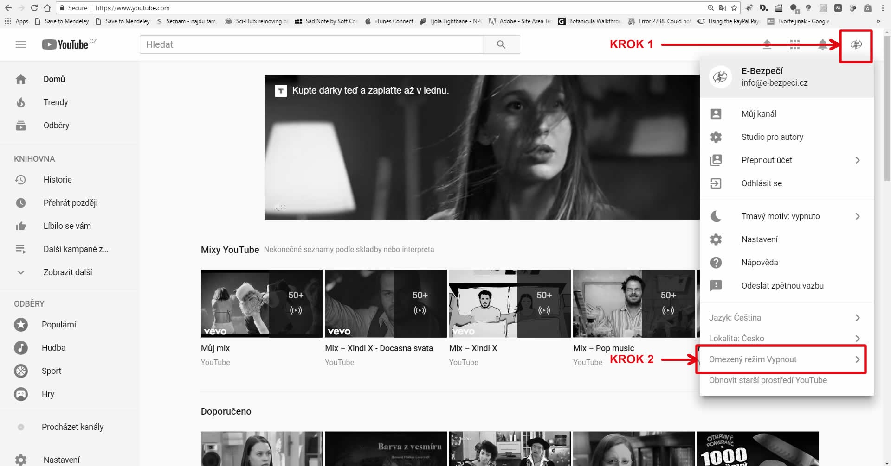
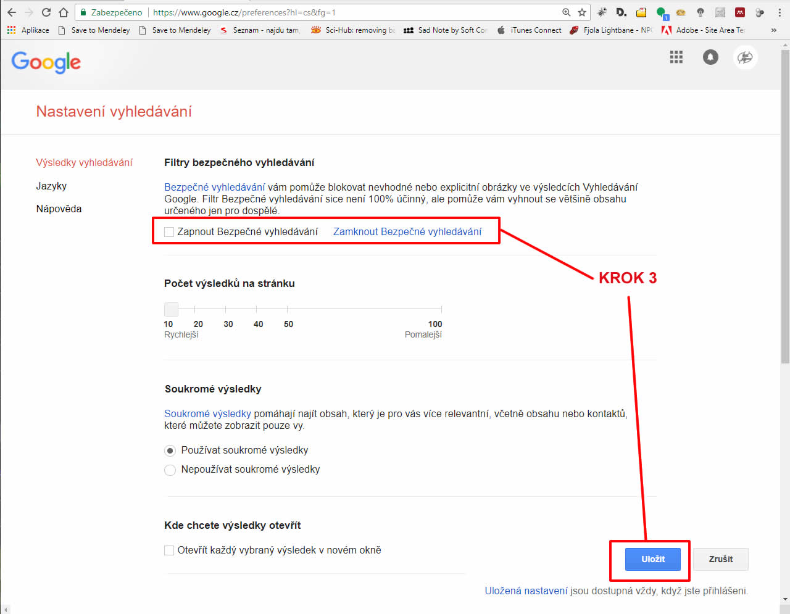

Jak zabezpečit první telefon
Pořídili jste dítěti mobilní telefon kvůli tomu, abyste si s ním v případě potřeby mohli volat nebo SMSkovat? Dítě má ale o využití mobilu většinou trochu jinou představu – chce ho používat, stejně jako jeho vrstevníci, k hraní her, stahování aplikací, hudby a videa, případně v pozdějším věku k chatování s kamarády. Na to všechno musíte při zabezpečení myslet.
Nastavte si domácí pravidla
- Pokud bude chtít dítě něco nainstalovat, domluví se o tom s rodičem.
- Mobilní telefon smí dítě používat ve škole pouze v souladu se školním řádem.
- Mobilní telefon nebude dítě půjčovat neznámým lidem, nebude se snažit mobilní telefon vyměnit za jiné zboží/službu apod.
Proveďte technické zabezpečení přístroje
- I když dítě poučíte, které stránky jsou bezpečné, nikdy nemáte jistotu, že se neprokliká na stránku problematickou. Proto instalujte nejnovější antivir, který minimalizuje hrozbu zavirování mobilního telefonu.
- U menších dětí vybavte telefon dítěte některou z aplikací rodičovské kontroly (parental control), která dokáže blokovat např. nežádoucí obsah (závadné webové stránky) či konkrétní aplikace (např. hry). Nastavit se dá i čas, v průběhu kterého může dítě využívat internetové služby.
Aktivujte sledování polohy mobilního telefonu
- Nepřišlo dítě včas ze školy nebo tréninku? Pokud si aktivujete funkci, která umožní sledovat online, kde se mobilní telefon dítěte nachází, budete o něco více v klidu. Telefon lze také na dálku prozvonit či přímo zablokovat v případě ztráty nebo krádeže. U starších dětí byste aktivaci měli provést vždy až po dohodě s nimi. Aktivaci proveďte podle manuálu mobilního telefonu dítěte. Pro její funkčnost je potřeba mít zřízený Google účet.
- Vyhledat či ovládat zařízení vzdáleně lze na adrese https://android.com/find (OS Android) nebo https://www.icloud.com/#find (OS iOS).
Vyřešte přístup do e-shopů s aplikacemi
- Promyslete si, zda poskytnete dítěti heslo do online obchodů jako Google Play či iTunes, aby si mohlo aplikace stahovat a instalovat, nebo jestli zůstanou tyto aktivity ve vašich rukou.
- Na účet, který bude vaše dítě využívat ke stahování aplikací, nevkládejte informace o své platební kartě! Vyhnete se tak nenadálým a někdy i neúmyslným výdajům za nákup online aplikací a virtuálních předmětů/služeb (např. silnějších bojovníků do akční hry).
Sociální sítě ano, či ne?
- Minimální věková hranice pro vstup na sociální sítě je 13 let (nově dle GDPR 16 let).
- Pokud dítěti povolíte využívání Instagramu či Facebooku i ve věku nižším, doporučujeme, aby heslo pro vstup do této sítě měl pouze rodič, který může regulovat a kontrolovat, co dítě na sítích dělá.
- Je vždy lepší, když se dítě na sociálních sítích pohybuje pod vaším dohledem, než aby si účet založilo „na zapřenou“ na počítači ve škole, v knihovně či u kamaráda.
Buďte pro dítě oporou
-
Pokud dítě v prostředí internetu narazí na problém, který nedokáže samo vyřešit, mělo by mít v rodiči vždy oporu a jistotu, že se mu s ním může svěřit.
Obrázek: Nastavení bezpečného vyhledávání na YouTube

Obrázek: Nastavení bezpečného vyhledávání na Google
